Battles Involving al-Qaeda
Battles Involving al-Qaeda
Updated: 2/9/25
Table of Contents
- Notable Battles Involving al-Qaeda central in Afghanistan (Including Maktab al-Khidamat)
- Notable Battles Involving Jabhat al-Nusra (2012-2016)
- Notable Battles Involving al-Qaeda groups in Iraq (2003-2014)
- Notable Battles Involving al-Qaeda central in Pakistan
- Notable Battles Involving Jamaat Nasr al-Islam wal-Muslimeen (JNIM) and al-Qaeda in the Maghreb
- Notable Battles Involving al-Shabaab
- Notable Battles Involving al-Qaeda in the Arab Peninsula
Notable Battles Involving al-Qaeda central in Afghanistan (Including Maktab al-Khidamat)
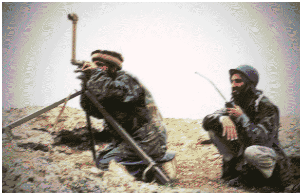
Fig 1. OSAMA BIN LADEN AND MAK/AL-QAEDA FIGHTER IN EASTERN AFGHANISTAN c. LATE 1980S
• May 12, 1987: Hundreds of Arabs, including Osama Bin Laden, traveled to Afghanistan 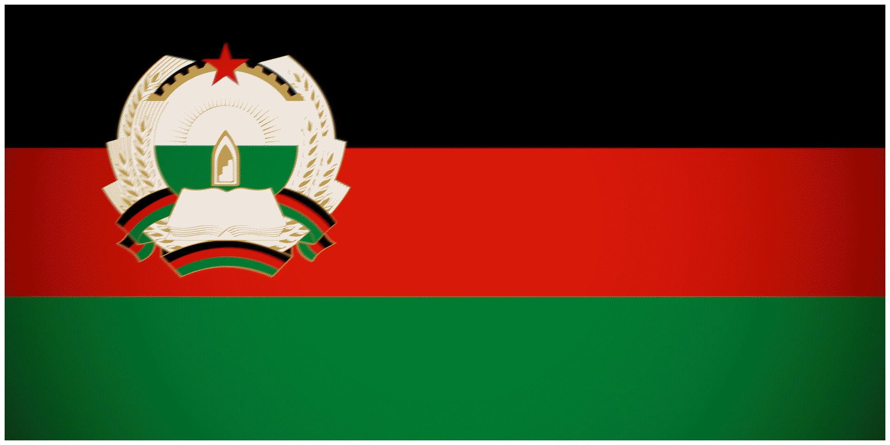
to do jihad against the secular atheist Soviet Union  during its devastating military invasion of the Sunni Muslim Afghanistan. Bin Laden, Abdullah Azzam, and other Qutbist Salafi Jihadists established the Maktab al-Khidamat
during its devastating military invasion of the Sunni Muslim Afghanistan. Bin Laden, Abdullah Azzam, and other Qutbist Salafi Jihadists established the Maktab al-Khidamat  militant organization, which helped Arab mujahideen travel to and fund the jihad against the Soviet Union . Their first baptism of fire would be in the MAK stronghold of Jaji, when Soviet soldiers attempted to capture and destroy the Jaji fortress, using hundreds of paratroopers and heavy air support. However, perhaps due to terrain, luck, and/or jihadist skill, the Soviets and the Afghan army failed to capture the base. The victory against the atheists was a significant morale and symbolic victory for MAK , Bin Laden, and Arab jihadists as a whole. It would lead to hundreds of more Arabs coming to jihad, joining Bin Laden and Azzam's personal militia. When Azzam was killed in Afghanistan in late 1989 by unknown actors, Bin Laden assumed control and expanded MAK into what is now known as al-Qaeda .
militant organization, which helped Arab mujahideen travel to and fund the jihad against the Soviet Union . Their first baptism of fire would be in the MAK stronghold of Jaji, when Soviet soldiers attempted to capture and destroy the Jaji fortress, using hundreds of paratroopers and heavy air support. However, perhaps due to terrain, luck, and/or jihadist skill, the Soviets and the Afghan army failed to capture the base. The victory against the atheists was a significant morale and symbolic victory for MAK , Bin Laden, and Arab jihadists as a whole. It would lead to hundreds of more Arabs coming to jihad, joining Bin Laden and Azzam's personal militia. When Azzam was killed in Afghanistan in late 1989 by unknown actors, Bin Laden assumed control and expanded MAK into what is now known as al-Qaeda .
• March 6, 1989: After the Soviet Union's withdrawal from Afghanistan in 1989, the Democratic Republic of Afghanistan would be met with their largest challenge yet. Mujahideen groups, mostly HIG 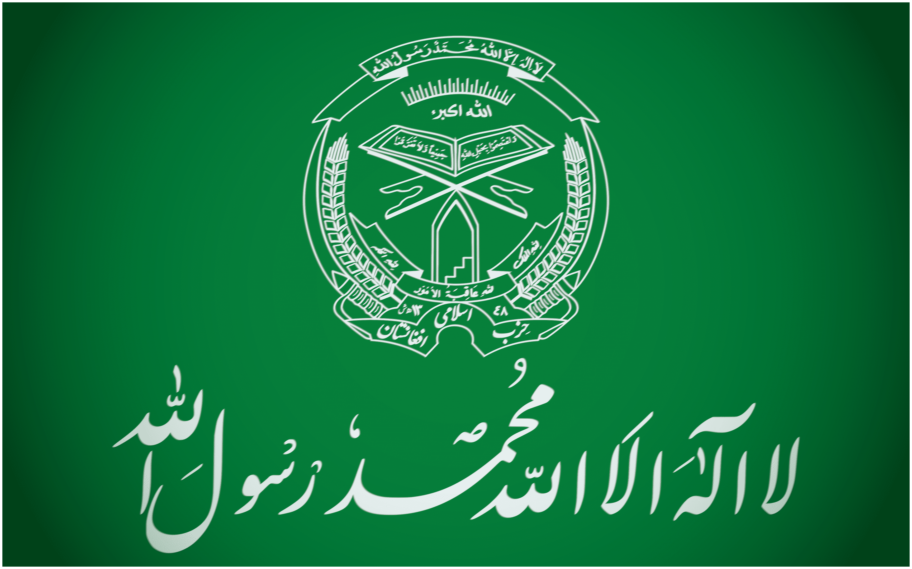
, launched an offensive on the provincal capital of Jalalabad near the Pakistani  border. The Mujahideen were able to temporarily seize the airport and minor settlements around the city, but they were unable to make real progress, as their horrible coordination and lack of conventional warfare experience greatly hampered them. They were forced to draw back months later, giving the DRA a sigh of relief. Osama Bin Laden's al-Qaeda had been heavily involved during the battle. He led hundreds of Arab mujahideen into the battle, prioritizing that struggle over Haqqani's siege of Khost. The group suffered very high casualties and their efforts were futile.
border. The Mujahideen were able to temporarily seize the airport and minor settlements around the city, but they were unable to make real progress, as their horrible coordination and lack of conventional warfare experience greatly hampered them. They were forced to draw back months later, giving the DRA a sigh of relief. Osama Bin Laden's al-Qaeda had been heavily involved during the battle. He led hundreds of Arab mujahideen into the battle, prioritizing that struggle over Haqqani's siege of Khost. The group suffered very high casualties and their efforts were futile.
• March 14, 1991: During nearly the entirety of Moscow's war in Afghanistan, mujahideen factions, mostly from Hekmatyar's HIG , and Arab jihadists, mostly loyal to the Haqqani network, but also some from Osama Bin Laden's al-Qaeda , besieged the city of Khost near the Pakistani border. While less involved than Haqqani in Khost, al-Qaeda was involved in training, logistics, and manpower. After the Soviets withdrew from Afghanistan in 1989, the DRA kept control of Khost for two more years, until opposition factions launched a final offensive, seizing Khost city and the airport after a few weeks of battle. After Jalalabad and Khost, Bin Laden and his group decided to move on from Afghanistan  , jumping around the Muslim world and engaging in various conflicts across the globe.
, jumping around the Muslim world and engaging in various conflicts across the globe.
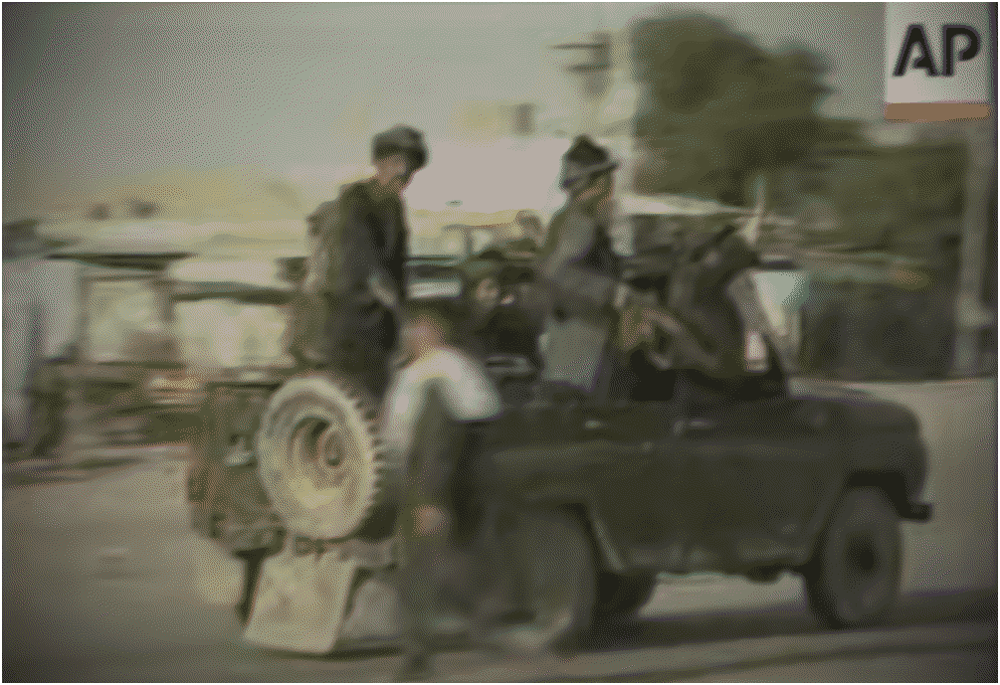
Fig 2. TALIBAN FORCES, BACKED BY AL-QAEDA, MOVE INTO MAZAR-I-SHARIF AFTER BATTLE WITH NORTHERN ALLIANCE c. MAY OF 1997
• May 22, 1997: After the fall of the DRA in 1992, Afghanistan broke out into a short civil war before the Taliban  entered the scene around 1995, seizing large parts of the country, promising extreme shariah law and stability among the chaos of Afghanistan's warlords. They quickly seized most of the country and forced Jamiat ul-Islam
entered the scene around 1995, seizing large parts of the country, promising extreme shariah law and stability among the chaos of Afghanistan's warlords. They quickly seized most of the country and forced Jamiat ul-Islam 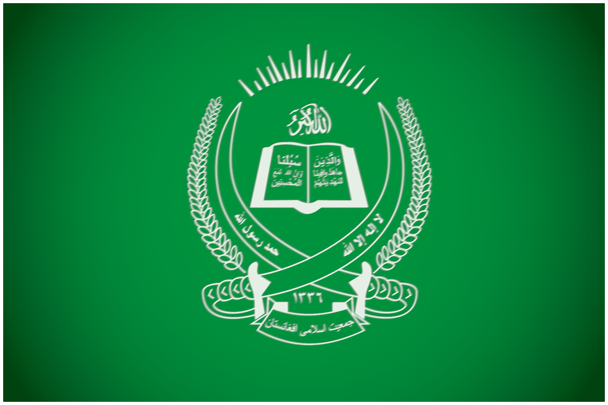
and other factions into a temporary Northern Alliance . In 1997, the Taliban launched an offensive on Hazara majority city of Mazar-I-Sharif, swapping it back and forth, until the Taliban finally secured it and started a major campaign of ethnic cleansing against the shi'ite Hazaras. al-Qaeda , flowing back into the country and seeing the Taliban as a safe haven that Sudan and Saudi couldn't be, engaged in the battle and was involved in the Taliban's advances in the country's north.
• November 10, 2001: The al-Qaeda 9/11 attacks, the worst terrorist incident in world history, provoked a major American  military response, with heavy support for the Afghan anti-jihadist Northern Alliance group , formerly led by Ahmad Shah Massoud. The first offensive of the Invasion started in the country's north, when anti-Taliban troops attacked and seized and secured the northern city of Mazar-i-Sharif with American SOF and air support. Taliban , al-Qaeda , and other jihadist organizations quickly buckled under the overwhelming pressure, beating all original expectations. The liberation soon opened the pathway to Kabul, the country's capital.
military response, with heavy support for the Afghan anti-jihadist Northern Alliance group , formerly led by Ahmad Shah Massoud. The first offensive of the Invasion started in the country's north, when anti-Taliban troops attacked and seized and secured the northern city of Mazar-i-Sharif with American SOF and air support. Taliban , al-Qaeda , and other jihadist organizations quickly buckled under the overwhelming pressure, beating all original expectations. The liberation soon opened the pathway to Kabul, the country's capital.
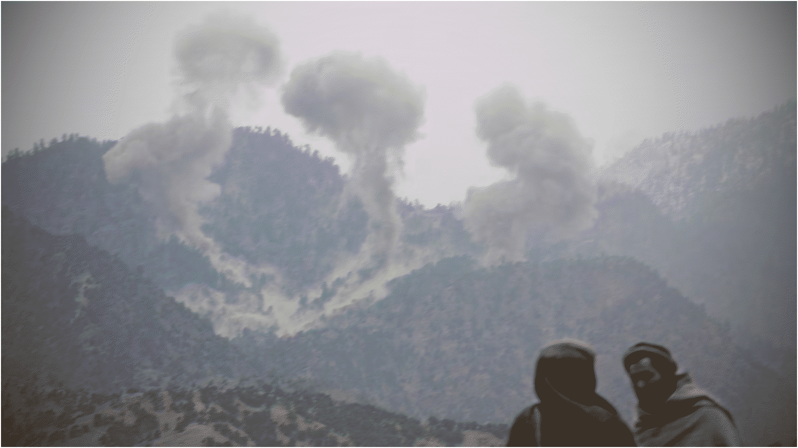
Fig 3. US FORCES POUNDS TORA BORA CAVE COMPLEX AND CLASHES WITH al-Qaeda , TALIBAN FIGHTERS AS THEY RUSH TO FIND BIN LADEN c. DECEMBER OF 2001
• November 25, 2001: Jihadist prisoners violently broke out of detention by the Northern Alliance and the coalition in Qala-i-Jangi. The Northern Alliance surrounded the prison and called for American air and ground support. Heavy clashes considered "disproportionate" lasted for days, with the coalition recapturing or killing the attackers. In the end, almost all of the prisoners were killed and only 86 were recaptured. All of the prisoners were foreign fighters, some of whom were members of al-Qaeda meant to be interviewed by the CIA. The first American in the war was killed here.
• December 6, 2001: The United States and its local and international allies led a major offensive against al-Qaeda in its stronghold of Tora Bora, an Afghan border cave system, in search for the organization's head Osama bin Laden. Despite Special forces operations, intense airstrikes, and severe jihadist casualties, Osama bin Laden slipped away, possibly to Pakistan through the well fortified complexes' massive tunnel system. For the next decade, the Americans went on a long manhunt across the Durrand line in search for bin Laden, pushing them into a long term occupation of Afghanistan . The Afghan Taliban in the region also slipped away, biding their time.
• December 7, 2001: American SOF and Northern Alliance forces captured Kandahar, the capital and traditional heartland of the Taliban and conservatism in Afghanistan, after an unexpectedly short battle. The fall of the city meant the end of the Islamic Emirate of Afghanistan and any Taliban control in the country. al-Qaeda , who had a few hundred soldiers in the battle, was dispersed into fighting an insurgency in Afghanistan's  border mountains, vastly weakening the group in the country and the world as a whole.
border mountains, vastly weakening the group in the country and the world as a whole.
• March 2, 2002: After the fall of Tora Bora in late 2001, which marked the start of the manhunt for Bin Laden, US , coalition, and new Afghan government troops launched the Operation Anaconda campaign in the Shah-i-Kot valley near the Durrand line, which had traditionally been a stronghold of al-Qaeda foreign fighters and Taliban in the area. Expecting a force of only 200, they were instead met with five times as much, resulting in long sustained fire fights. With intense air support and local allies, the coalition was able to clear the valley, killing anywhere from 500 to 800 jihadists, with only 15 dead on the coalition side. Nevertheless, many issues were reported in the American response , with some alleging that al-Qaeda leaders were able to get away and flee to Pakistan. It would be the last of this type of battle in Afghanistan for years, if not more than a decade.
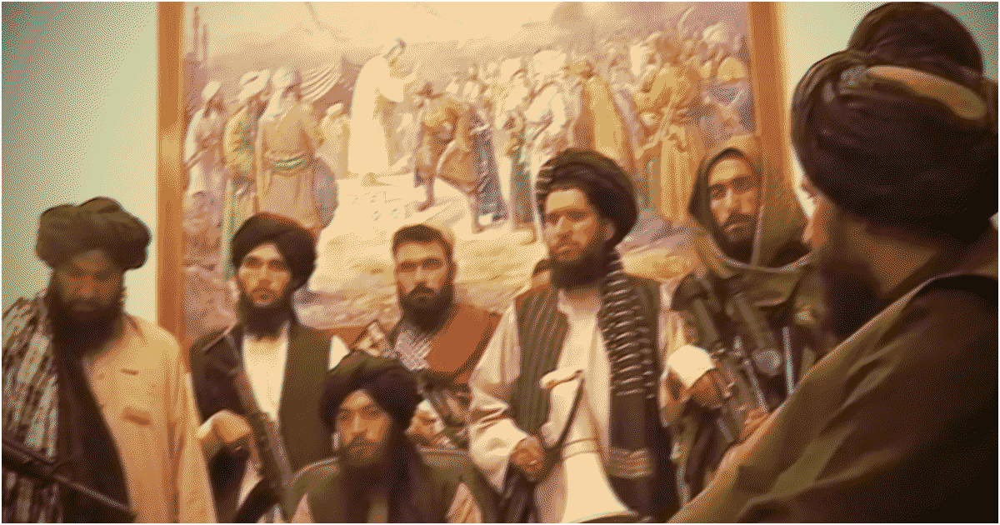
Fig 4. TALIBAN FIGHTERS ENTER THE PRESIDENTIAL PALACE IN KABUL AS AFGHAN GOVERNMENT COLLAPSES c. AUGUST OF 2021
• August 3, 2021: Over the course of the 20 year long insurgency, al-Qaeda's cause in Afghanistan shifted to assisting the Afghan Taliban through dark money and foreign fighter links. The group's central command remained entrenched in the Khorasan region. However, during the Taliban's offensive that recaptured Kabul and destroyed the American-backed state in Afghanistan in 2021, al-Qaeda had sent many fighters, domestic and foreign, to the battle, in a way commentators said was unprecedented since the fall of the first IEA . Over the years since 2021, Afghanistan has turned once again into a safe haven for al-Qaeda , where the headquarters of the group is essentially allowed to roam freely.
Notable Battles Involving Jabhat al-Nusra (2012-2016)
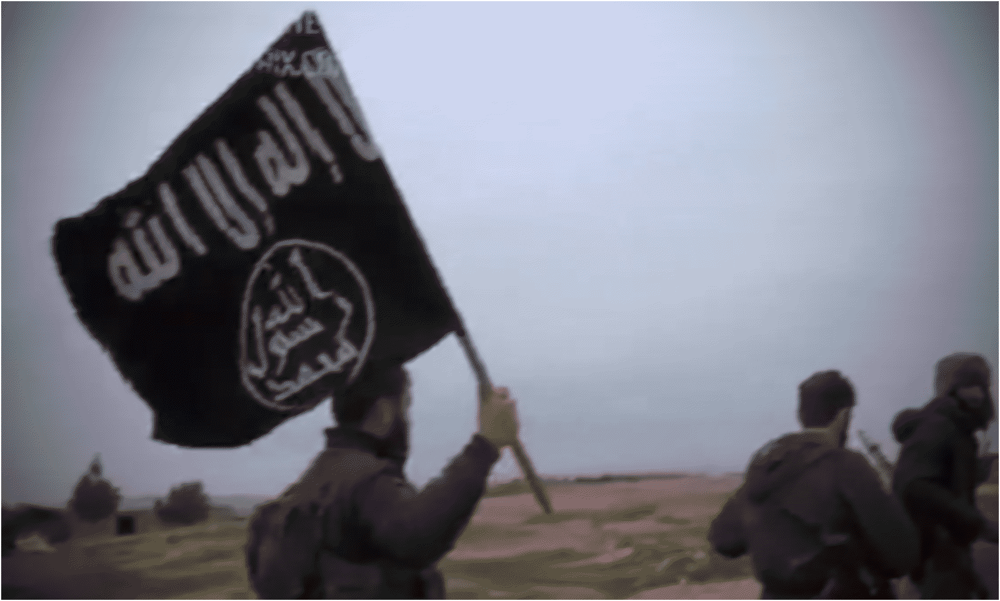
Fig 4. AL-NUSRA FRONT MILITANTS PARADE CAPTURED EQUIPMENT FOLLOWING THEIR CAPTURE OF A REGIME BASE NEAR ALEPPO c. DECEMBER OF 2012
• January 23, 2012: With the ever escalating Syrian Civil War entering its second year, al-Qaeda forces entering from Iraq  created the al-Nusra Front
created the al-Nusra Front  . al-Nusra would soon become one of the most formidable forces in all of Syria
. al-Nusra would soon become one of the most formidable forces in all of Syria  , operating often in coordination with more moderate opposition forces
, operating often in coordination with more moderate opposition forces  . Abu Muhammad al-Jolani, the future president of Syria, was the emir of this al-Qaeda branch.
. Abu Muhammad al-Jolani, the future president of Syria, was the emir of this al-Qaeda branch.
• December 8, 2012: During 2012 and 2013, the roots of the al-Nusra Front would grow inside of Aleppo, the second largest city in Syria, that at the time was under a brutal urban war between Assad and the rebels . al-Nusra became involved in both the fighting on the ground, but also with suicide bombings against regime and civilian targets. By 2015 and 2016, the al-Nusra front became more and more involved in the battle, as the Syrian regime began to move in that direction during counteroffensives. By that period, al-Nusra , as a part of Jaysh al-Fatah 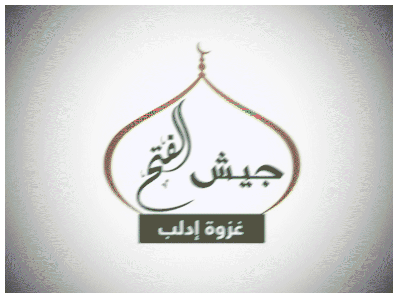
, were trying their hardest to break the siege laid by the regime during mid 2016.
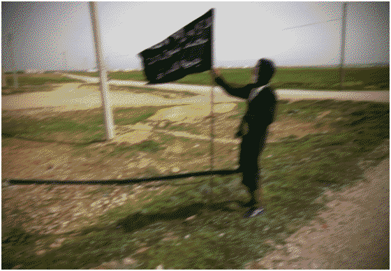
Fig 4. AL-NUSRA FRONT FIGHTER PLANTS THE FLAG OF THE GROUP SOMEWHERE IN RAQQA PROVINCE FOLLOWING THE FALL OF RAQQA CITY c. MARCH OF 2013
• March 6, 2013: The Syrian opposition scored their largest victory of the war yet by capturing the regional hub and provincial capital of Raqqa from Assad after a short battle. Jabhat al-Nusra and other islamist factions led the assault on the city, working with regional an local secularist militias. The fall of Raqqa was the latest episode in the regime's large scale withdrawal from the north east, only keeping garrisons in strategic cities like al-Hasakah, Deir Ezzore, and Qamishili. Nearly a year later, the IS  attacked and captured the city from the hodgepodge of local factions during their lightning offensive across the Euphrates against the opposition .
attacked and captured the city from the hodgepodge of local factions during their lightning offensive across the Euphrates against the opposition .
• June 6, 2013: The Syrian opposition was besieged in al-Qusayr, an important city on the northern half of the border between Lebanon 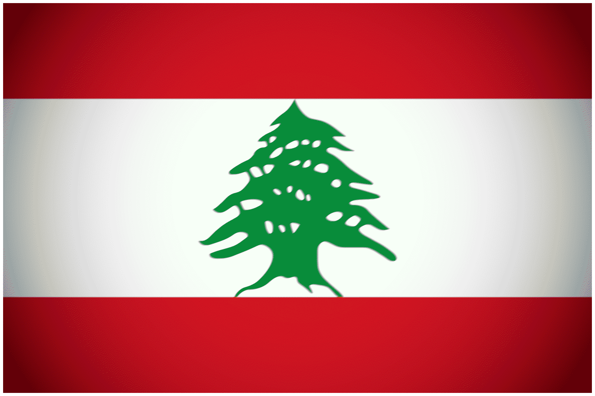
and Syria, by Hezbollah  and the SAA . During the siege, Hezbollah fighters , who were more disciplined and trained than the SAA , led the spearhead of the offensive and moved in also from Beqaa Valley in Lebanon, committing grave atrocities. The al-Nusra Front had a minor presence in the city, reportedly losing a commander in the fighting.
and the SAA . During the siege, Hezbollah fighters , who were more disciplined and trained than the SAA , led the spearhead of the offensive and moved in also from Beqaa Valley in Lebanon, committing grave atrocities. The al-Nusra Front had a minor presence in the city, reportedly losing a commander in the fighting.
• August 5, 2013: In 2012, the increasingly militant Syrian opposition laid siege to the strategic Menagh airbase in Aleppo's countryside, near the Kurdish stronghold of Afrin. After a year of fighting, hardened ISIL and al-Nusra fighters coming straight from Iraq led the final assault into the last regime controlled buildings of Menagh. The jihadists had proven instrumental to the airbase's capture, especially foreign muhajireen, who gave their lives in car bombings.
• September 10, 2013: Jabhat al-Nusra involved itself in the back and forth struggle between Assad Regime and Opposition forces in Damascus and the Damascene suburbs of Ghouta. Despite some early rebel advances, their disorganization prevented their victory, allowing for the SAA to push them back to Douma and eastern Ghouta, where frontlines stabilized around the Jobar neighborhood. The al-Nusra front had hundreds of fighters near the capital and involved themselves in numerous VBIED attacks against regime bases and troops .
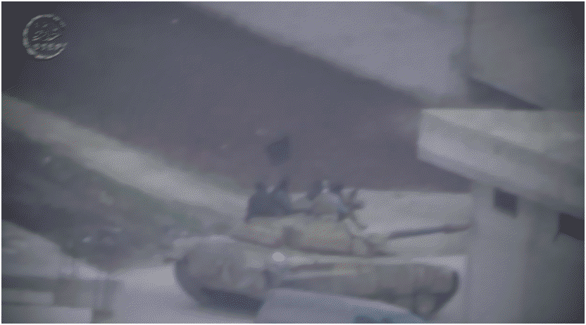
Fig 1. JABHAT al-Nusra T-72 MOVES INTO MAARAT AL-HURMA DURING THEIR WAR AGAINST THE SRF AND THE HAZZM MOVEMENT c. NOVEMBER OF 2014
• February 26, 2014: Hezbollah and Assad Regime troops ambushed a column of a few hundred Jabhat al-Nusra fighters in al-Otaiba, a village to the east of Damascus city. It was a major blood bath for the jihadist group, who lost atleast more than half of the forces in the column. The loss was a part of the regime's escalating offensives to contain the eastern Ghouta opposition pocket .
• October 26, 2014: Jabhat al-Nusra launched a major offensive in Idlib Governorate against the secular and non-salafi islamist militias in Idlib governorate, the largest being the Hazzm Movement and the Syrian Revolutionaries Front . This action came after the al-Qaeda affiliate blamed the SRF for sabotaging their attempted operation in Idlib city, which ended in failure. Al-Nusra , much stronger than the disorganized rabble, swept aside the secular rebels , vastly increasing their control and influence in Idlib governorate. Throughout the next few years, al-Nusra would focus on striking down opposing rebel groups or securing their loyalty, with targets including groups directly supported by America's TOW program.
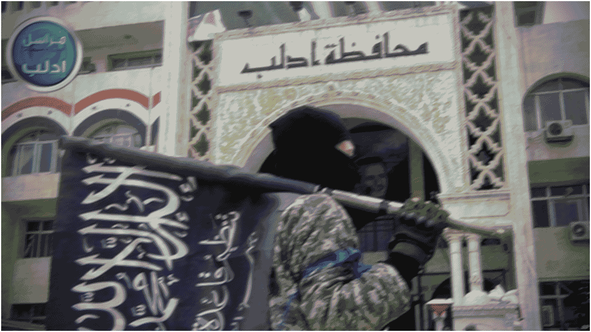
Fig 2. AL-NUSRA FRONT MILITANT HOLDING THE GROUP'S FLAG NEXT TO RECENTLY CAPTURED GOVERNOR'S OFFICE IN IDLIB c. MARCH OF 2015
• March 28, 2015: The Jaysh al-Fatah operations room captured the governorate capital of Idlib, marking the largest victory for the opposition since the fall of Raqqa in 2013. Al-Nusra was part of the operations room and was heavily involved in the battle itself. With fresh reports of war crimes and sectarian attacks, there were concerns that Jolani's al-Nusra would centralize power in Idlib for themselves. The fall of Idlib and the Palmyra offensive by IS contributed heavily to Russia's  decision to fully and militarily intervene in Syria for Assad . Eventually, Idlib would become the capital of the Syrian opposition for the remainder of the war, all the way up to the fall of the regime in late 2024.
decision to fully and militarily intervene in Syria for Assad . Eventually, Idlib would become the capital of the Syrian opposition for the remainder of the war, all the way up to the fall of the regime in late 2024.
• April 22, 2015: Jisr ash-Shugur fell to the Jaysh al-Fatah coalition during their offensive in Idlib governorate. The fall of Jisr ash-Shugur was greatly supported by al-Nusra suicide bombers and fighters , who led the initial assault into the town. Following the fall of Ariha, the SAA was able to retreat from the salient, without encirclement. There was a concern at the time that Jisr ash-Shugur would lead to a rebel offensive on Latakia, but it did not pan out.
• June 25, 2015: Taking hints from the opposition in Idlib governorate, the Daraa rebels, from the secular Southern Front  , to the Islamic Front
, to the Islamic Front  , and the al-Nusra front , launched Operation Southern Storm, in a bid to finally and fully capture Daraa city. Despite some early gains and over exaggerated media chaos, the offensive made little overall progress, partially to be blamed on the disorder and poor relations between the Southern Front and the al-Nusra front .
, and the al-Nusra front , launched Operation Southern Storm, in a bid to finally and fully capture Daraa city. Despite some early gains and over exaggerated media chaos, the offensive made little overall progress, partially to be blamed on the disorder and poor relations between the Southern Front and the al-Nusra front .
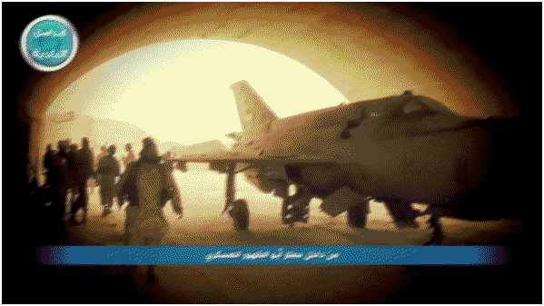
Fig 3. AL-NUSRA FRONT FIGHTERS SHOWCASING THEIR WAR LOOT AFTER THE FALL OF ABU AD-DUHUR AIRBASE c. SEPTEMBER OF 2015
• July 28, 2015: Building off of their victories from Idlib city and Jisr ash Shugur, the Jaysh al-Fatah operations room advanced across the al-Ghab plain, seeking to establish a presence in the area between the Nusayri and Zawiya mountains. The al-Nusra Front was deeply involved, leading the largest prong into the plain. The opposition seized a few towns before the SAA was able to push them back.
• September 9, 2015: The Jaysh al-Fatah operations room led by Jabhat al-Nusra led the final assault to capture Abu al-Duhur Airbase in Idlib Governorate, contributing hundreds of fighters, armored vehicles, and suicide bombers, and ending one of the longest sieges of the 21st century. By this time, Abu ad-Duhur had become nearly entirely destroyed, with most airframes long gone by this point. Nevertheless, the opposition acquired some remaining heavy equipment and gained a big propaganda victory.
• July 29, 2016: Abu Muhammad al-Jolani (real name Ahmed al-Sharaa) announced the al-Nusra Front's rebranding to "Jabhat Fatah al-Sham" 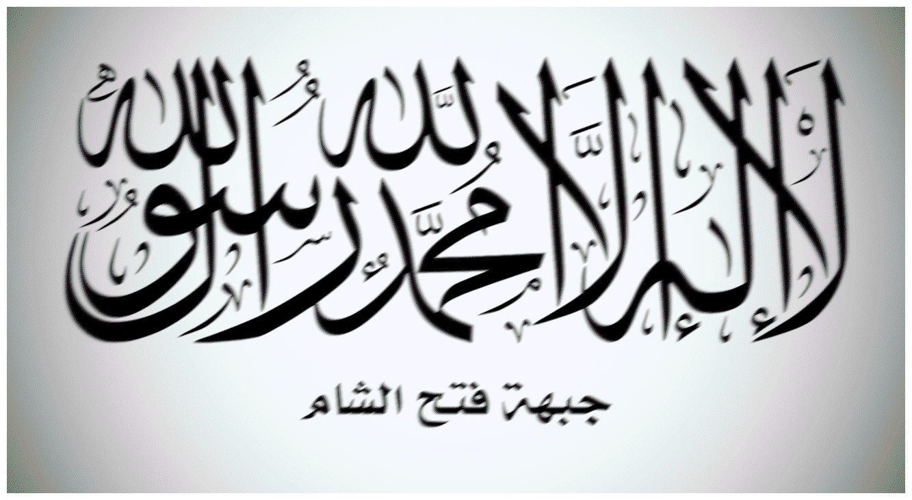
and their revoking of any ties with "any external entity". The external entity is generally believed to be al-Qaeda . Over time, JFS would drop and dissociate with al-Qaeda , who condemned them for increasing nationalism. JFS , soon Hayyat Tahrir al-Sham  , attempted to position themselves as a Syrian islamist revolutionary group, not a cog in al-Qaeda's global machine. This approach did not work initially with the west, resulting in HTS' designation as a terrorist group by many nations. Al-Qaeda's true believers in Syria would form Hurras ad-Deen
, attempted to position themselves as a Syrian islamist revolutionary group, not a cog in al-Qaeda's global machine. This approach did not work initially with the west, resulting in HTS' designation as a terrorist group by many nations. Al-Qaeda's true believers in Syria would form Hurras ad-Deen 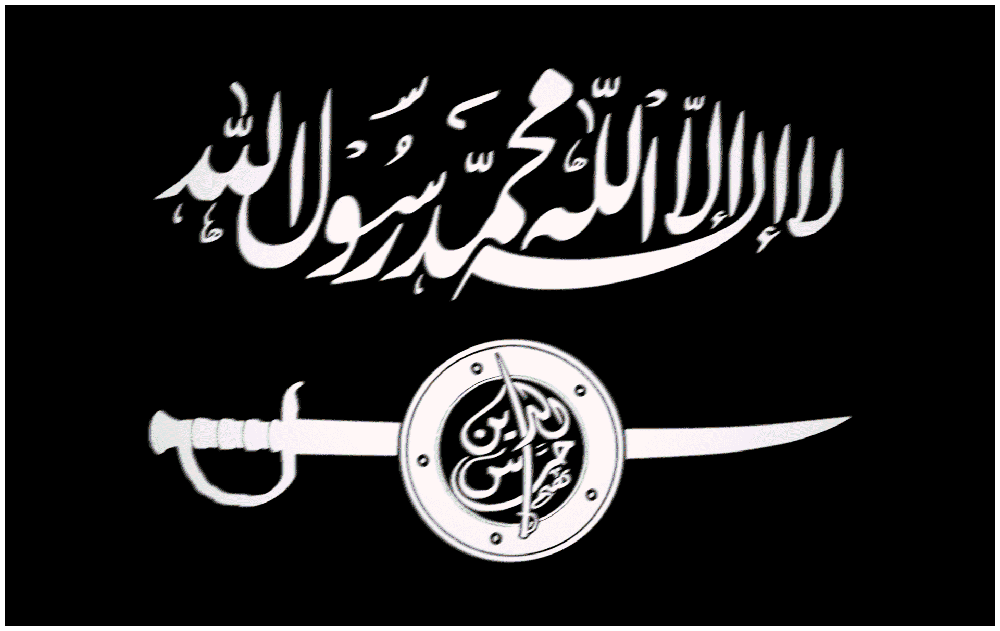
, a group that would frequently be targeted and attacked by Jolani and other factions.
Notable Battles Involving al-Qaeda groups in Iraq (2003-2014)
• October 17, 2004: Iraqi mujahideen leader Abu Musab al-Zarqawi made bayaa to Osama bin Laden, joining al-Qaeda as al-Qaeda in Iraq (AQI) . Zarqawi's affiliate would fight everyone, Peshmerga  , Iraqi security forces , American troops , shi'ite militias, and rival Sunni islamist groups, just everyone. al-Qaeda in Iraq would be known as the group's most extreme and violent branch for its increasingly sectarian focus on shi'ites. There came to be many disagreements between bin Laden and al-Zarqawi over the group's doctrine.
, Iraqi security forces , American troops , shi'ite militias, and rival Sunni islamist groups, just everyone. al-Qaeda in Iraq would be known as the group's most extreme and violent branch for its increasingly sectarian focus on shi'ites. There came to be many disagreements between bin Laden and al-Zarqawi over the group's doctrine.
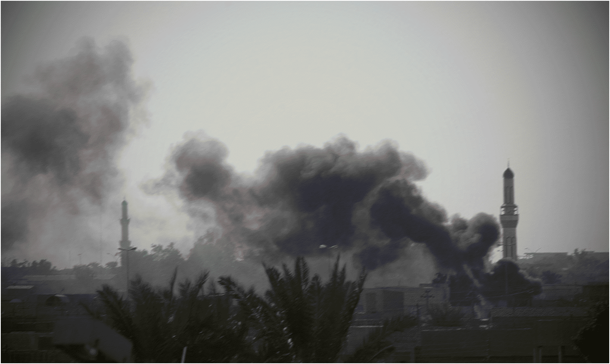
Fig 1. MOSQUE IN FALLUJAH SMOULDERS AS US SOLDIERS ADVANCE AGAINST IRAQI INSURGENTS, INCLUDING AQI c. NOVEMBER OF 2004
• November 7, 2004: Fallujah had long been a thorn in the side for the American military in Iraq . During early 2004, it was controlled nominally by new security forces , however, it had a very strong insurgent presence, including from al-Qaeda and the Islamic Army 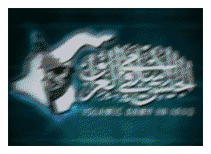
. With this knowledge, the United States Marine Corps launched Operation Phantom Fury, striking and attempting to enter the fortified stronghold of Fallujah. Over a month, the marines slowly cleared the city, building by building, ambush after ambush. Even after the city’s official capture, remnants of the insurgency continued to attack Americans and Iraqi security for months. Fallujah became useful propaganda for AQ , as the Americans had suffered high casualties, literally the highest for one battle in the entire Iraq War. It soon became clear to the Americans that Iraq would not be a one and done operation.
• November 8, 2004: al-Qaeda in Iraq insurgents attacked Mosul and its weak and frail American-backed garrison , quickly overwhelming it and forcing a coalition intervention. Eventually, Mosul was resecured, however the ease by which they had taken the city was a regional propaganda boost for AQ over the Baathist remnant insurgents 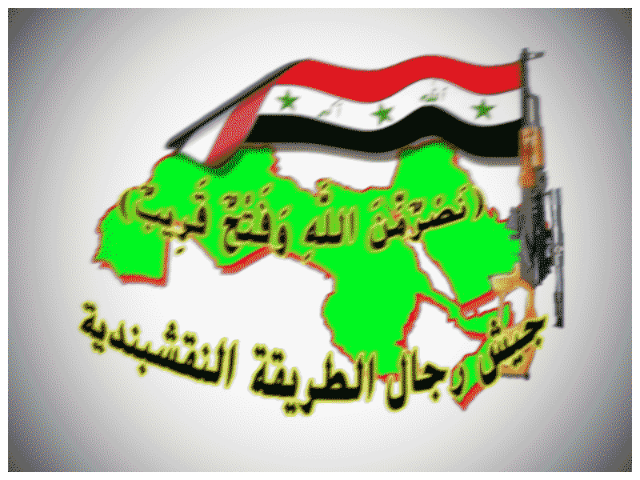
.
• November 5, 2005: United States , now collaborating with the new Iraqi Army , attacked the town of Husaybah on the Syrian border along the Euphrates, fighting al-Qaeda and probably foreign mujahideen. Bashar al-Assad's Syria , known for its alignment with Iran  and its distaste for the west, allowed for sunni jihadists from across the world to flow into Iraq to destabilize the new American puppet state. Husaybah and the al-Qaim region was an important part of this, hence its targeting.
and its distaste for the west, allowed for sunni jihadists from across the world to flow into Iraq to destabilize the new American puppet state. Husaybah and the al-Qaim region was an important part of this, hence its targeting.
• June 11, 2006: In Sunni al-Anbar's Ramadi, the United States and Iraqi security troops clashed with al-Qaeda in Iraq and Sunni insurgents in a long brutal urban battle, where the latter fortified positions to the teeth, with IEDs and sniper ambushes. The city had basically been under de-facto al-Qaeda administrative control, superpowering the previous tribal powerbase. Eventually, American heavy armored support came to clear the city over the following months. It was a part of the nationwide destabilization that had occurred after the al-Askari Shia mosque bombing.
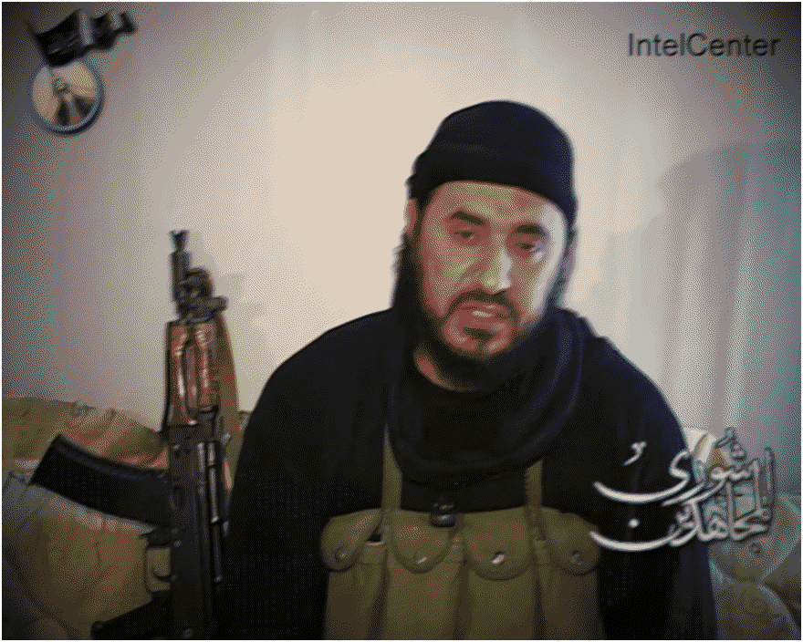
Fig 2. al-Qaeda IN IRAQ LEADER ABU MUSAB AL-ZARQAWI IN A VIDEO RELEASED BY THE GROUP c. APRIL OF 2006
• December 25, 2006: With Iraq as a whole on edge after the Askari mosque bombing, al-Qaeda took advantage of this situation to seize Baquba, the capital of the Diyala province, which had been a large stronghold of sunni insurgency during the whole war. al-Qaeda militants continued to attack US , coalition, and shi'ite forces resulting in mass atrocities and later the troop surge.
• January 6, 2007: As a part of the counterinsurgency campaign during the sectarian blood letting of the post Askari Mosque bombing conflict, American troops and Iraqi security forces wreslted control of suburbs of Baghdad from al-Qaeda and Sunni jihadist insurgents. One of the toughest battles was on Haifa street, where 200 insurgents were killed and 20 Iraqi troops were killed.
• June 16, 2007: Bolstered by the troop surge and looking into reversing the gains al-Qaeda and the Mahdi Army had acquired during the sectarian civil war over the Iraqi government , the Americans and MNF-I launched a major nationwide military offensive, across shi'ite and sunni areas of the country. They clashed with al-Qaeda troops in sunni areas, eventually recapturing the city of Baqubah, Baghdad's suburbs, and the Fallujah-Ramadi direction. Over the summer of 2007, the MNF-I and security forces had succeeded in most of these goals, causing severe al-Qaeda casualties and a major reduction in their territorial control. The insurgency would slow down, taking major hits, but it didn't fully go away before the American withdrawal .
• January 25, 2008: After their victories in Diyala governorate and in al-Anbar, the US and Iraqi security forces launched an offensive in Ninevah governorate, one of the last al-Qaeda strongholds in the country. The US and Iraqi governments shored up their defenses and forces in the region, leading to the deaths of numerous al-Qaeda emirs and commanders in the north. Over time, al-Qaeda suicide attacks would wittle down and the sunni insurgency had mostly died down by the withdrawal in 2011.
• May 20, 2013: Across 2012 and 2013, al-Qaeda in Iraq , now known as the Islamic State of Iraq and the Levant (ISIL) , had deeply involved itself in the nascent conflict in Syria , where they assisted rebels and a new al-Qaeda group, the al-Nusra front , which was the new al-Qaeda affilate in Syria . The support corridor to Syria stretched through Anbar governorate, the sunni stronghold in Syria. In response, the Iraqi military launched operation al-Shabah, eliminating and destroying some bases and camps along the border. It was the start of the new campaign against sunni insurgents in Iraq.
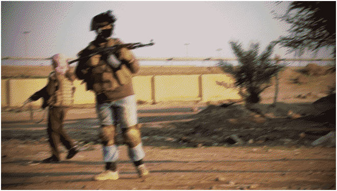
Fig 3. ISIL MILITANTS WITH CAPTURED IRAQI ARMY EQUIPMENT PATROLLING THE STREETS OF FALLUJAH c. JANUARY OF 2014
• January 4, 2014: Two years after American forces withdrew from Iraq and nearly a decade after American troops had cleared it twice in one year, al-Qaeda in Iraq , now known as the Islamic State of Iraq and the Levant (due to its operations in Syria ), captured the city of Fallujah once more in a relatively bloodless affair, kicking off the start of a campaign that would see large swathes of northern Iraq fall under the group's control. In late 2013, the frame had shifted considerably from 2011, since now there was a shi'ite president known for incindeary sectarianism, which provoked sunni anger. This most likely contributed to the ease at which the city's fell. The fall of Fallujah would the last victory for AQ in Iraq , however, as the group soon separated itself from central command.
• February 3, 2014: Ayman al-Zawahiri's al-Qaeda announced that the Islamic State of Iraq and the Levant , formerly their affiliate in Iraq , was no longer a part of their network. This announcement had come after al-Baghdadi's troops attempted to forcefully unite with al-Jolani's al-Nusra front , causing intense clashes across eastern Syria . This major split caused a giant civil war between jihadist factions across the world, with funding and foreign fighters all on the line. A few months later, Abu Bakr al-Baghdadi declared himself caliph, the first such claimant to that title in nearly 100 years. Salafi Jihadism would never be the same.
Notable Battles Involving al-Qaeda central in Pakistan
• March 16, 2004: With the Afghan Taliban subjugated and removed from power, hundreds of Afghan al-Qaeda militants ventured to rural, desolate, and poor Khyber Pakhtunkhwa, where they aligned with local deobondi jihadists. Pakistani intel had determined hundreds of al-Qaeda foreign fighters were hiding in an area near Wana in KP, maybe even commander Ayman al-Zawahiri. Acting on the information, they launched an assault on the position, fighting jihadists in the mountain ranges and meeting stiff resistance. In a matter of a week, al-Qaeda was forced to flee from their positions, experiencing 50% casualties. These were the first shots of the war in northwest Pakistan.
• May 22, 2011: al-Qaeda and TTP  militants launched an attack on the Pakistani naval aviation's headquarters in Karachi, Pakistan. The attack had occured after US navy seals had killed Osama Bin Laden, the then leader of al-Qaeda . in Abbotabad, northern Pakistan . The major attack showed the sheer reach of these militant groups, with some in government saying that the base had been comprimised by infiltrators and sympathizers from within.
militants launched an attack on the Pakistani naval aviation's headquarters in Karachi, Pakistan. The attack had occured after US navy seals had killed Osama Bin Laden, the then leader of al-Qaeda . in Abbotabad, northern Pakistan . The major attack showed the sheer reach of these militant groups, with some in government saying that the base had been comprimised by infiltrators and sympathizers from within.
• June 15, 2014: After a devastating attack carried out by the TTP in Karachi's main Jinnah Airport killed 26 people, the Pakistani military intensified counterinsurgency operations in Khyber Pakhtunkhwa, launching Operation Zarb-e-Azb. Zarb-e-Azb, while primarily against the TTP and the Islamic State , the op also roped in al-Qaeda , who's fighters and foreign fighters in Pakistan suffered casualties. Many were forced to flee to third countries like Syria .
Notable Battles Involving Jamaat Nasr al-Islam wal-Muslimeen (JNIM) and al-Qaeda in the Maghreb
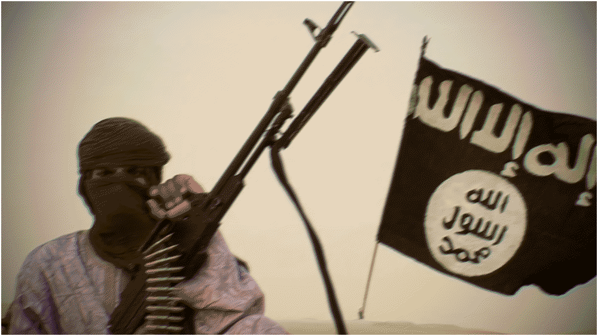
Fig 1. AQIM MILITANT IN MALI DURING THE TUAREG UPRISING c. 2012
• June 28, 2012: The secular Tuareg separatists of Azawad 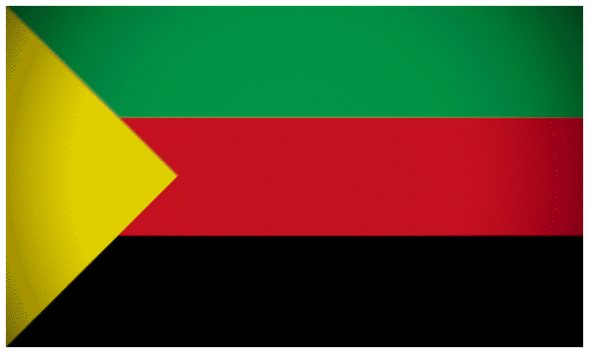
were crushed by Ansar Dine and al-Qaeda jihadists after a heated battle in Gao, one of the largest towns in Mali's  Tuareg north. It marked the complete subsuming of the Tuareg cause by jihadists, who continued to march down south, now committed to seizing Bamako from the Malian government . AQIM was deeply involved in the fighting, where they lost a commander and founding member to Azawad i militants.
Tuareg north. It marked the complete subsuming of the Tuareg cause by jihadists, who continued to march down south, now committed to seizing Bamako from the Malian government . AQIM was deeply involved in the fighting, where they lost a commander and founding member to Azawad i militants.
• January 11, 2013: With AQIM, Ansar Dine, and other Jihadists already on central Mopti’s doorstep, with their eyes on Bamako, France  decided to fully militarily intervene in support of the Malian army , first as an air support mission and then as a ground support operation. AQIM, for their part, vowed to resist the French invaders until the end. Soon, Mali recaptured the central plains and moved north to Azawad’s Gao and Timbuktu cities. Thus began the long guerilla campaign by these jihadists against the French and Malian armies.
decided to fully militarily intervene in support of the Malian army , first as an air support mission and then as a ground support operation. AQIM, for their part, vowed to resist the French invaders until the end. Soon, Mali recaptured the central plains and moved north to Azawad’s Gao and Timbuktu cities. Thus began the long guerilla campaign by these jihadists against the French and Malian armies.
• February 17, 2022: JNIM jihadists encircled and put the refugee flooded northern town of Djibo in Burkina Faso  under prolonged and dehabilitating siege. Over time, JNIM strengthened the siege, launching repeat offensives and raids, resulting in a major humanitarian crisis. Sometimes, Burkinabe forces manged to send some convoys to resupply the city, however, it remains under siege to this day.
under prolonged and dehabilitating siege. Over time, JNIM strengthened the siege, launching repeat offensives and raids, resulting in a major humanitarian crisis. Sometimes, Burkinabe forces manged to send some convoys to resupply the city, however, it remains under siege to this day.
• August 8, 2023: In a move to project power in north Mali , JNIM enforced a blockade of Timbuktu, a historic town that once served as an education hub in the sahel. For the next few years, the city remains under siege to this day, with JNIM occasionaly intensifying assaults and shelling, while other times relenting for humanitarian convoys.
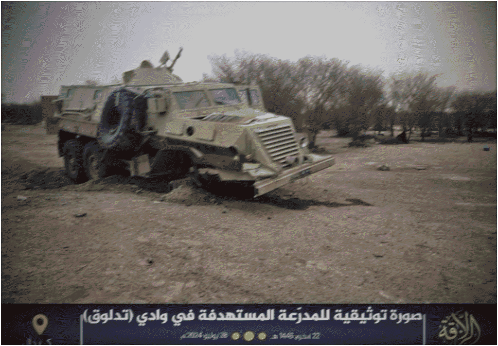
Fig 2. JNIM RELEASES PHOTOS OF DESTROYED RUSSIAN WAGNER GROUP VEHICLES FOLLOWING THEIR CRUSHING DEFEAT NEAR TINZAOUATEN, MALI c. JULY OF 2024
• June 11, 2024: In Burkina Faso , JNIM militants stormed the town of Mansila and its military base, killing more than a hundred Burkinabe soldiers and nearly two dozen civilians. After some looting and torching, JNIM was repelled by Burkinabe and Wagner 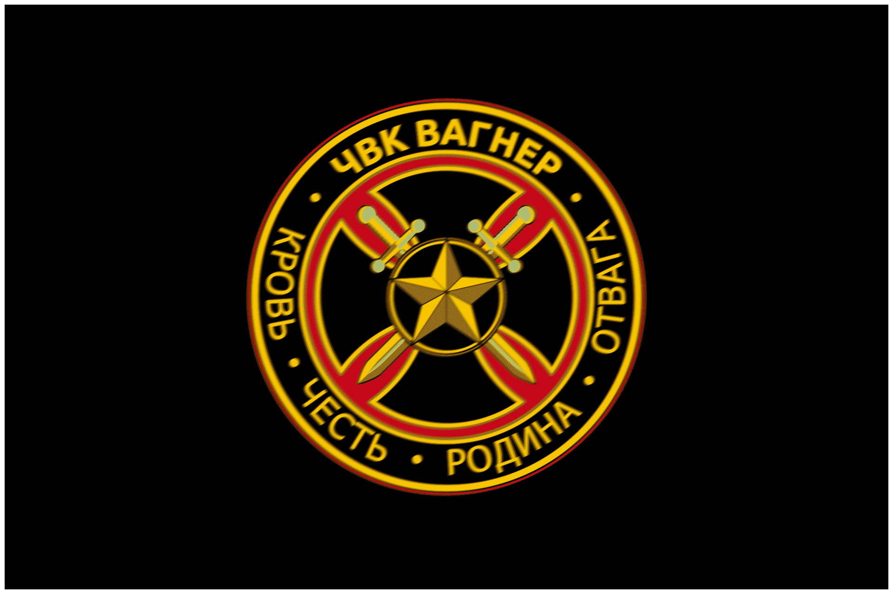
Group forces, who underwent their first military actions in Burkina Faso . The way that the Burkinabe government had shelved and pushed the issue had provoked anger from many soldiers, some of whom privately protested.
• July 27, 2024: CMA Tuaregs, with JNIM on the side, executed the ambush of a lifetime against Russian Wagner Group in Tinzaouaten, northern Malian desert, killing up to 82 Wagner mercenaries . The ambush occurred as Wagner was conducting their offensive in seizing Azawad’s towns in the north. They became greedy and overzealous. The possibly Ukrainian aided operation was the largest single killing of Russian troops in Mali since the start of the intervention. AQ’s JNIM was also involved in the ambush, helping kill the retreating Russo - Malian troops. After this disaster, Russia would begin the replacement of Wagner with direct MoD linked Africa Corps troops 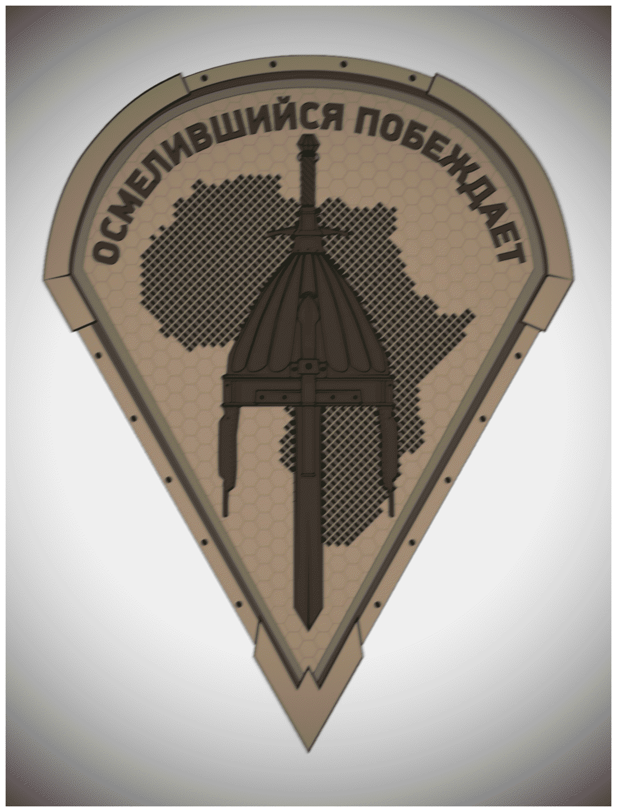
.
• August 8, 2024: In the largest attack since the start of jihadist insurgency in Burkina Faso nearly a decade ago, 500 to 1000 Burkinabe soldiers were ambushed by groups of JNIM fighters as they were coming from a gold mine resupply mission near Nassougou. They were on a faster route back considered highly dangerous and infested with al-Qaeda jihadists. Up to 200 Burkinabe soldiers had died in the ambush, with JNIM claiming the destruction of literal dozens of vehicles.
• June 1, 2025: JNIM militants launched an attack on Wagner and Malian Army troops in Boulikessi, central Mali , killing maybe more than a hundred and capturing more than a dozen. The attack was devastating enough that the government could not securely hold the base for any longer, resulting in its abandonment. It was one of the deadliest attacks against the Malian military since the early 2010s.
• September 3, 2025: After months of increased offensives and attacks in the country's south, JNIM announced the start of a fuel blockade of Mali , one that is still somewhat ongoing today. Militants ambushed and burned dozens of fuel tankers coming through the country's borders, forcing services in the capital to a halt and putting extreme strain on the junta. While not in the position to seize territory in the south, this operation showed the southerners that their reach knew no bounds. Eventually, Russian and Malian troops were sent to reinforce convoys, helping some get in to the capital. Nevertheless, it was a major JNIM strategic victory.
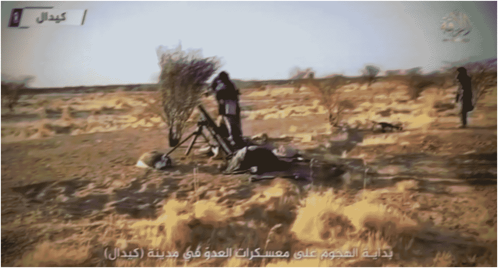
Fig 3. JNIM MILITANTS LAUNCHING OFFENSIVE OPERATIONS NEAR KIDAL, MALI c. APRIL OF 2026
• April 25, 2026: JNIM and the FLA (Azawadis) launched the largest cross country offensive since before Operation Serval in 2012. In a matter of a day, FLA and JNIM forces seized multiple towns in the north and actively contested control over Gao, a large regional junction. In the south, JNIM launched large attacks on Bamako, its suburbs, and Sevare near Mopti, killing the Minister of Defense and paralyzing the Malian military for the northern push. The situation got so bad and out of control that Assimi Goita was speculated to have been captured or dead, as he was radio silent for many days. ISSP took advantage of it and temporarily seized Menaka city for the first time ever. The offensive, which mostly tapered over the month of May represents the largest humiliation of Russia in Africa ever, as two years of Wagner progress in the north is overturned. It led to the return of the fuel blockade put in place last year. JNIM may have achieved its 2015 Battle of Kunduz moment.
Notable Battles Involving al-Shabaab
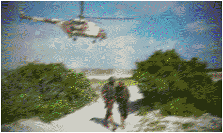
Fig 1. KENYAN FORCES IN A SOMALI BASE NEAR COMBAT OPERATIONS IN KISMAYO c. SEPTEMBER OF 2012
• February 9, 2012: al-Shabaab , a militant jihadist group in Somalia  that made its name for resisting Ethiopia
that made its name for resisting Ethiopia  and the African Union, announced their merger and pledge of allegience to al-Qaeda's new emir Ayman al-Zawahiri. Before this point, it was known that al-Shabaab had ties and had negotiated with bin Laden's al-Qaeda , who had a keen interest in Somalia .
and the African Union, announced their merger and pledge of allegience to al-Qaeda's new emir Ayman al-Zawahiri. Before this point, it was known that al-Shabaab had ties and had negotiated with bin Laden's al-Qaeda , who had a keen interest in Somalia .
• September 28, 2012: After the success of operation Linda Nchi, Kenyan  forces prepared and launched a major offensive at the al-Shabaab stronghold of Kismayo in Somalia's south. After weeks of preperation Kenyan and Somali government forces stormed Kismayo from the roads and amphibiously, seizing it in only a few days. Kismayo had been a major source of income for the jihadists, as it served as a functioning port, from which Somalis would export charcoal. A significant defeat, some came to temporarily believing that the permanent destruction of the group was imminent. Perhaps it could've been compared to Kandahar.
forces prepared and launched a major offensive at the al-Shabaab stronghold of Kismayo in Somalia's south. After weeks of preperation Kenyan and Somali government forces stormed Kismayo from the roads and amphibiously, seizing it in only a few days. Kismayo had been a major source of income for the jihadists, as it served as a functioning port, from which Somalis would export charcoal. A significant defeat, some came to temporarily believing that the permanent destruction of the group was imminent. Perhaps it could've been compared to Kandahar.
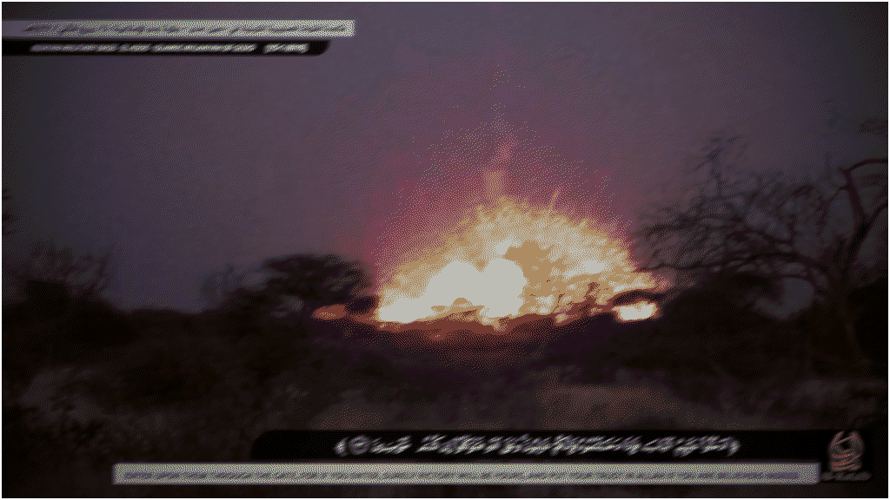
Fig 2. AL-SHABAAB SVBIED DETONATES IN THE GATE OF EL-ADDE AU BASE LEADING TO ITS OVERRUNNING c. JANUARY OF 2016
• January 15, 2016: In one of the largest attacks in years, al-Shabaab attacked a Kenyan African Union military base in El Adde, south eastern Somalia . The al-Shabaab attack was extremely successful, with more than 150 Kenyan soldiers dying and resulting in a temporary withdrawal from the area, handing the jihadist group a significant propaganda victory. The Kenyan government attempted but failed to successfuly cover up the situation, which was quickly used by the country's opposition.
• January 27, 2017: In one of the deadliest days for Kenyan troops in Somalia since the ambush of el-Adde, al-Shabaab forces targeted and bombarded the base in Kulbiyow using suicide vehicles and technicals. At least 40 to 60 Kenyan soldiers were killed, despite consistent Kenyan governmental depictions of victory against terror.
• July 20, 2022: With Ethiopia thrown in a bind over the escalating Tigray War, hundreds of al-Shabaab jihadists launched a cross bross border attack into Ethiopia's Somalia region after months of preparation, catching the ENDF by suprise and resulting in heavy casualties. While the bulk of the offensive efforts had been concentrated on Ethiopian towns, impressively, some units were able to reach towns and mountains all the way in Oromia. Even though Ethiopia had managed to quell it after two weeks, the incursion had been a large propaganda victory and a sign of a newly emboldened al-Shabaab .
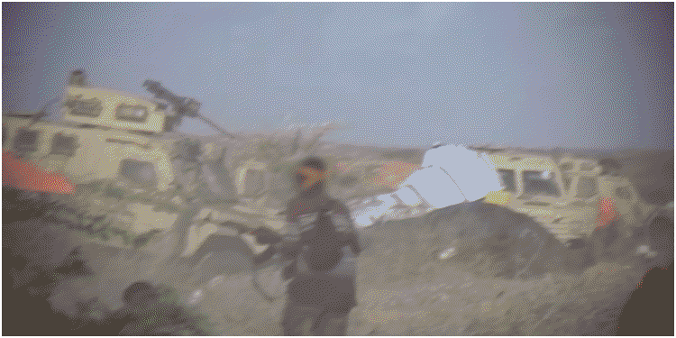
Fig 3. AL-SHABAAB FIGHTER STANDS NEXT TO DAMAGED BUT CAPTURED SOMALI NATIONAL ARMY VEHICLES AFTER THEIR HUMILIATION c. AUGUST OF 2023
• August 20, 2022: After an abhorrent attack on a hotel in Mogadishu that killed 22 people, Somalia's president declared "total war" against al-Shabaab and launched a major offensive in Galguduud, Hirshabelle, and Hiran province. The SNA , backed up with local clans, the US , and the African Union, made sizeable gains in these regions, even splitting al-Shabaab territories . Despite these gains, however, the SNA were unable to secure or effectively combat rural al-Shabaab insurgents , leading to a stalling and even reversal of some gains. While it had definitely weakened the group, the offensive hadn't destroyed or even kicked them out fully from Central Somalia .
• August 26, 2023: The SNA's military offensive in central Somalia hit a brick wall, when al-Shabaab ambushed a military encampment in Osweyne, Galmudug state, killing more than a hundred soldiers. The SNA's defeat here resulted in a wide scale collapse in the frontlines in that state, resulting in the reversal of many gains and forcing direct oversight from Mogadishu. Some officers even faced legal consequences for their actions in Galmudug state. After this ambush, the frontlines between al-Shabaab and the government would stall and solidify once again. The offensive had failed in its stated goal of eliminating the terrorist group.
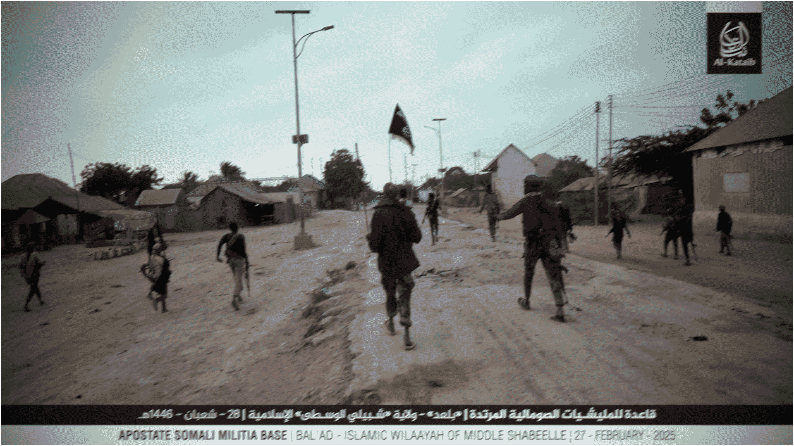
Fig 4. AL-SHABAAB JIHADISTS PATROL THE STREETS OF BALAD AFTER ITS CAPTURE DURING OFFENSIVE OPERATIONS c. FEBRUARY OF 2025
• February 20, 2025: Across Shabelle state, al-Shabaab launched a major offensive, seeking to connect the pockets of militant control and perhaps isolate Mogadishu from the wider world. Over the course of several months, they were able to achieve some of their gains, connecting enclaves of militant territory, recapturing lost ground, and menacing Mogadishu. However, they were unable to fully consolidate their gains or move into the capital region itself, which was later bolstered by new Turkish  reinforcements coming in by the end of the year. By the offensive's end by August, much of the territorial gains made during the 2022 counteroffensive was reversed.
reinforcements coming in by the end of the year. By the offensive's end by August, much of the territorial gains made during the 2022 counteroffensive was reversed.
Notable Battles Involving al-Qaeda in the Arab Peninsula
• May 27, 2011: In the midst of Yemen's  popular uprising, al-Qaeda forces swarmed and captured the town of Zinjbar and adjacent towns, suprising the region. It marked their greatest victory so far during the Arab Spring unrest. In the aftermath, despite American air support and numerical superority, it took several months for Yemeni forces to clear and recapture Zinjibar. Clashes festered for literally a year, before the Yemeni army made a final offensive in May of 2012, finally recapturing and consolidating Zinjibar and nearby towns in the Abyan province. The AQAP militants fled across the country, where they would continue to fester for a few more years until the fall of Mukalla in 2015.
popular uprising, al-Qaeda forces swarmed and captured the town of Zinjbar and adjacent towns, suprising the region. It marked their greatest victory so far during the Arab Spring unrest. In the aftermath, despite American air support and numerical superority, it took several months for Yemeni forces to clear and recapture Zinjibar. Clashes festered for literally a year, before the Yemeni army made a final offensive in May of 2012, finally recapturing and consolidating Zinjibar and nearby towns in the Abyan province. The AQAP militants fled across the country, where they would continue to fester for a few more years until the fall of Mukalla in 2015.
• April 2, 2015: al-Qaeda in the Arab Peninsula (AQAP) , taking advantage of the collapse of the Yemeni state as a result of the Houthi forces  and the pullback of government troops to the west, forcefully seized the Hadhramaut capital of Mukalla from a variety of weak disjointed groups. From Mukalla, the springboard, al-Qaeda launched attacks and offensives across Yemen . Under the Islamic Emirate, Mukalla was led under al-Qaeda's severe shariah law, with major economic and humanitarian difficulties.
and the pullback of government troops to the west, forcefully seized the Hadhramaut capital of Mukalla from a variety of weak disjointed groups. From Mukalla, the springboard, al-Qaeda launched attacks and offensives across Yemen . Under the Islamic Emirate, Mukalla was led under al-Qaeda's severe shariah law, with major economic and humanitarian difficulties.
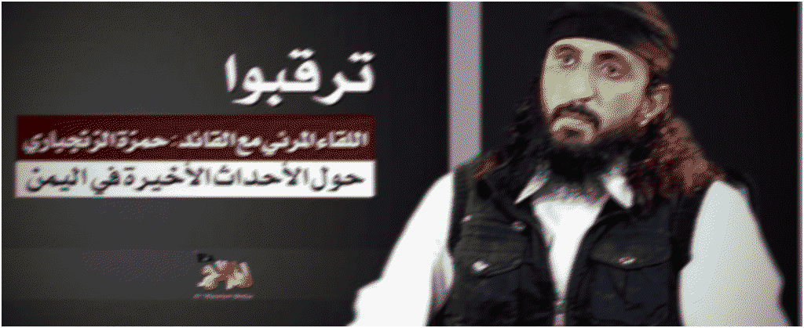
Fig 1. AQAP MEDIA ANNOUNCES THE DEATH OF A SENIOR LEADER DUE TO AN AMERICAN AIRSTRIKE c. FEBRUARY OF 2016
• February 2, 2016: AQAP forces launched an offensive in Abyan governorate, successfully connecting their territory in Zinjbar to Mukalla and seizing the towns of Shuqrah and Ahwar. However, it would be al-Qaeda's last victories in Yemen , as increased attention would be brought to the group's activities after the Saudi  backed coalition had recaptured Aden and stalled the frontlines around Taiz and the Bayda mountains.
backed coalition had recaptured Aden and stalled the frontlines around Taiz and the Bayda mountains.
• April 26, 2016: Under the cover of intense US air and drone strikes, UAE  and Yemeni forces reentered Mukalla after a short battle. The fall of Mukalla marked a major defeat for AQAP , who were forced into a mainly insurgent role in the Hadhramaut valley. The group had basically been pushed back to its starting point after the fall of Zinjbar in 2012 but before Mukalla in 2015.
and Yemeni forces reentered Mukalla after a short battle. The fall of Mukalla marked a major defeat for AQAP , who were forced into a mainly insurgent role in the Hadhramaut valley. The group had basically been pushed back to its starting point after the fall of Zinjbar in 2012 but before Mukalla in 2015.
• February 17, 2018: As part of the counter insurgency in Hadhraumaut, UAE and local Yemeni tribal forces had attacked and cleared the Masini valley, a previous stronghold for AQAP just north of Mukalla. After countless blows in the Hadhraumaut, the jihadists migrated to northern Abyan governorate, where they would fester, fighting everyone and sometimes making strategic deals with local actors. This is their current position.